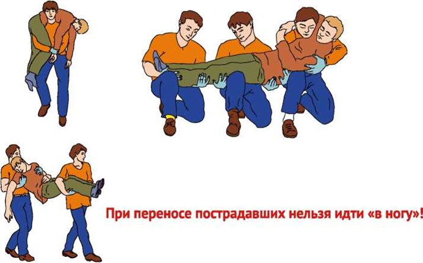
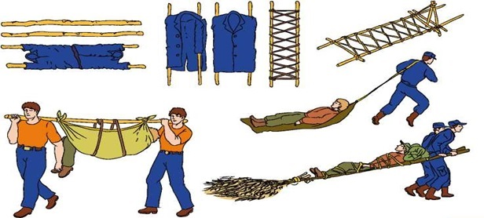

СПОСОБЫ ТРАНСПОРТИРОВКИ ПОСТРАДАВШИХ
ОБЩИЕ ПРАВИЛА
При подозрении на повреждение шейного отдела позвоночника - обездвиживание головы вместе с шеей.
При движении вверх по лестнице (при вносе в салон транспорта) пострадавшего переносят головой вперед.
При движении вниз по лестнице (при выносе из транспорта) пострадавшего переносят ногами вперед.
При перемещении пострадавшего с большой потерей крови его ноги должны быть выше головы.
Несущий пострадавшего впереди внимательно смотрит под ноги и сообщает идущему сзади обо всех препятствиях.
Несущий пострадавшего сзади следит за состоянием пострадавшего и при необходимости подает команды: «Стоп! Началась рвота!» или «Стоп! Потеря сознания!».
СПОСОБЫ ПЕРЕНОСА ПОСТРАДАВШИХ ИЗ МЕСТА ПОРАЖЕНИЯ.
ПЕРЕНОС ПОСТРАДАВШЕГО НА НОСИЛКАХ (ЩИТЕ).
При переносе пострадавших нельзя идти «в ногу»!
При отсутствии носилок используй доски, двери, листы толстой фанеры (лыжи, стулья, одеяло) и иные подходящие предметы.
ПЕРЕНОС ПОСТРАДАВШЕГО С ИСПОЛЬЗОВАНИЕМ ПОДРУЧНЫХ СЕДСТВ.

Источник:
http://www.culture.mchs.gov.ru/medical/modes_of_transportation_affected/
ТЕЛЕФОН СЛУЖБЫ СПАСЕНИЯ: 112